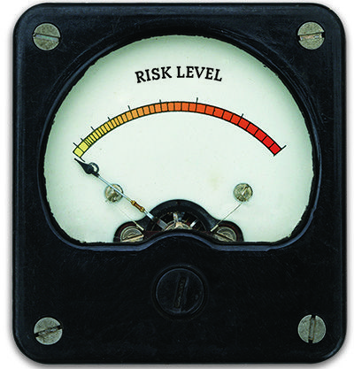

Risk tolerance is an investor’s ability and willingness to lose some or all of an investment in exchange for greater potential returns (U.S. Securities and Exchange Commission, n.d.).
A robo-advisor uses a client's answers to a risk questionnaire to assign a risk profile, then builds a portfolio accordingly (TD Wealth Investing, n.d.).
Based on these factors, robo-advisors classify investors into three common profiles: Conservative, Moderate, and Aggressive (Wealthfront, 2024).
| Strategy | Typical Asset Allocation | Goal |
|---|---|---|
| Conservative | 70–80% bonds and 20–30% stocks | Keeping money safe and stable |
| Moderate | 40–60% stocks and 40–60% bonds | Safety and growth in balance |
| Aggressive | 80–100% stocks and 0–20% bonds | Maximum long-term growth |
Ideal for: Retired individuals or those with 1–3 year goals who do not want to take risk.
Ideal for: Professionals in the middle of their careers who want to reach their goals in the next five to ten years.
Ideal for: Young investors or those with 10+ year goals who can handle more risk.
The client answers a short questionnaire. (e.g., "If your portfolio lost 15% in one month, would you sell, hold, or buy more?")
(E*TRADE from Morgan Stanley, 2024)The system assigns a score (1–10) and selects Conservative (1–3), Moderate (4–7), or Aggressive (8–10).
(TD Wealth Investing, n.d.)Specific Exchange-Traded Funds (ETFs) are chosen to match the target asset allocation.
(Investopedia, 2023b)The system periodically adjusts the portfolio back to its original target to maintain risk levels.
(Betterment, 2024)